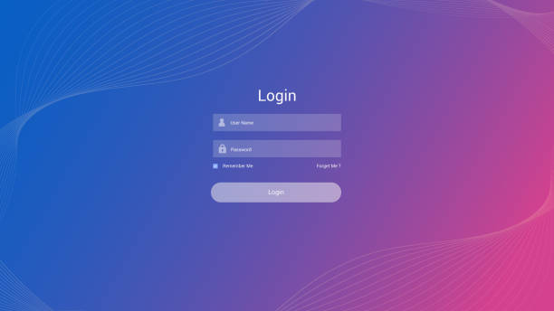

Password Management
In the digital world, passwords are a combination of keyboard
characters provided by users, while creating a web account. This would
serve as an access key to its contained data. To gain access(Log in)
to a user account, web pages require the account username and
password. These accounts could hold sensitive data, making their
security of great importance. In this article, we would educate you on
the best password management practices, to prevent unauthorized access
to your data.

Firstly, we would discuss some of the challenges to password
management, or ways cybercriminals gain access to our web accounts;

-
Login Spoofing: This is a process whereby cybercriminals create a
fake page to clone or look like our usually visited web pages.
Thereby storing a user's password when they try to gain access to
their accounts.
-
Sniffing Attack: Here, passwords are stolen by intercepting data
while in transit through a network with tools.
-
Shoulder surfing attack: This can be defined as any form of stealing
a password as it is typed in e.g with the use of a micro camera.
-
Brute force attack: A brute force attack uses a trial and error
method to gain access to a user's account. It is performed by
calculating possible combinations to get passwords.
-
Data Breach: A data breach can be said to be when access is
illegally gotten to a web database. This allows these cybercriminals
to steal data contained on these websites.
Furthermore, we would discuss how we can prevent unauthorized access
to our web accounts/data.
-
Choose a strong password: To ensure our passwords are strong, we
must ensure they include;
-Numbers
-Symbols
-Capital Letter
-
Change passwords often: To ensure our passwords are secure, we must
change them at least once every quarter year.
-
Use two-factor authentication: This requires web accounts to request
an input PIN usually sent to the account owner’s provided email
address or phone number. This does not only protect a user from
password theft but also ensures his/her knowledge of any new device
access to their account.
-
Keep your information online: Users are advised to sign out of their
accounts after use and remove permissions of applications that are
not in use.
-
Invest in account security products: Investing in these products
would keep user accounts secure whilst also alerting them to any
security issues on our accounts. It also informs us of malicious
link posts and fraudulent accounts impersonating us.
Lastly, we would discuss what to do when your web accounts are hacked:
-
Take back control of the account with the laid-out steps and change
passwords and security questions.
- Warn your contacts for damage control.
-
Look for signs of trouble, or how you got hacked if corrections are
necessary.
- Protect yourself for the future.
Introduction to Web Development Vol I,
The term web development can be said to be the process of building and
maintaining websites. It involves a host of work to ensure ideas are
transferred to look great and work optimally. This is done by creating
a set of commands to the computer in languages they understand to
deliver the desired user experience.
These processes in web development can be classed into two namely;
- Front-end development.
- Back-end development.
Front-End Web Development
This covers the layout, design, and interactivity of a website. It
involves the transfer of ideas into a graphical interface with
programming languages, so a user can communicate with data on the
website. These languages could vary depending on the task a programmer
is trying to accomplish and they include HTML, CSS, and JavaScript.
Hypertext Markup Language (HTML): This can be defined as symbols or
codes inserted with files a developer adds to a website, explaining
how these files are viewed by users. These are usually sub-grouped
into the head for defining the document characteristics and body
section for the actual description for our pages to visiting
computers.
HTML is usually written with reference tags for easy machine and human
co-understanding encased in lesser than and greater than signs “<
>”. These HTML tags e.g. <header>, <article> helps
define every entity of this document.
When an HTML tag is defining or encasing data or a file, it is called
an HTML element. This is because now it is an individual or
stand-alone component of the web document. These elements usually have
an opening tag and a closing tag indicating their opening and closing
as shown below:
<p> This is a paragraph </p>
HTML elements are subdivided into inline and block elements,
-
Inline Element: These elements like their name are inline, thereby
do not start a new line of codes and take up just enough space as
its contents require e.g <span>, <br>.
-
Block Element: These codes always begin a new line and take up the
full width of space their content requires, except when altered with
CSS. Examples include <article>, <video>.
HTML may sometimes need to provide additional information for its
elements with the help of its attributes. These HTML attributes are
added in the opening tags and come in name/value pairs like:
“attribute-name = “attribute-value” ” as shown below:
<img src= “my_pic.jpg”> </img>
Cascading Style Sheet (CSS): This can be defined as a system in which
styling is added to web pages. Thereby controlling the positioning,
and presentation of these pages, including their fonts, colors,
layouts, and how a page is adapted to fit different user device
screens. This is done by selecting individual elements of a page and
defining the styling one would want to attribute to it.
We achieve this by calling the HTML element one would like to style
and defining the characteristics to be implemented in them. These
elements are called with the use of CSS selectors i.e. a name the HTML
can be identified with. While the process of calling and defining
styles on an HTML element is said to be the CSS rule. This is further
illustrated below;
Div { Border : 1px Solid Red;
Font-size : 5px; }
As shown above, each attribute attached to an HTML element comes with
a value to define how much of them is attached to the element, this is
called the CSS value.
For Vol. II of this series we would be discussing the next ammunition
in the web development series, JavaScript. Here we would learn to add
functionalities to our websites.
The Art of Counter Attack in Soccer
In recent times, the counterattack tactic has become one of the most
useful arsenals at the disposal of soccer teams. Which has in turn
created the most underdog victories in the history of the game. This
is seen where teams sit back and soak pressure from opposing teams,
with the intention of breaking their defense by initiating a
fast-paced offense as soon as they get hold of the ball.
To achieve the best result with this tactic, it is important to;
-
Assign players to defend against each opposing attacker to minimize
the threat.
-
Assign a defensive midfielder as the first line of protection from
attack.
-
Train players for swift movement, especially attackers and wingers.
-
Good passers of the ball are very important here especially at
central midfield, to be able to connect the attackers to initiate an
attack.
-
Attackers need to be as clinical as possible with available chances,
as goal chances are going to be limited here.
The game plan for your team should be as follows;
-
To attract the opposing team to come at them, by defending deep in
your half of the field.
- Gain possession of the ball.
-
Wingers and attackers begin looking for loopholes in the opposing
defense to exploit.
- The ball is moved to the central midfielders.
-
Central Midfielders initiate a pass to the wingers, who then make a
run with the ball to break the opposing defense.
-
The ball is then moved to the attackers, to make an attempt at the
opposing team's goal.
According to the Pitcher blog, the counterattack is among the six most
popular soccer tactics. A tabular representation of their list is
shown below from the most to least;
| S/N |
Soccer Tactics |
Soccer Team Associated with |
| 1 |
The Classic 4-4-2 |
Manchester United 1999 |
| 2 |
Tiki-Taka |
Barcelona 2009 |
| 3 |
The Counter-Attack |
Real Madrid 2014 |
| 4 |
Park the Bus |
Chelsea 2013 |
| 5 |
The Long Ball Game |
Bolton Wanderers 2004 |
| 6 |
The High Press |
Borussia Dortmund 2012 |
A classic example of this is the Inter-Milan treble-winning team of
2010. Where they were able to use the counterattack to defeat
Barcelona in the UEFA Champions League semi-finals, a much better team
of players on paper. A lot of football fans weren’t too happy with the
game tactics, but team coach Jose Mourinho replied, “If you have a
Ferrari and I have a small car, to beat you in a race. I have to break
your wheel or put sugar in your tank”.